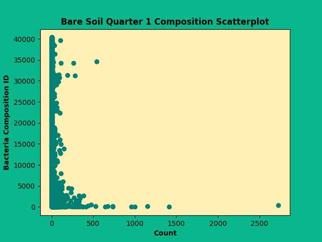

This website provides visualizations for Soil Bacteria Observations database, which provides a study which reports soil bacterial communities and ecosystem functions across reclaimed mine vegetation types: bare soil (CK), grassland (GL), poplar plantation (GPL), and mixed forest (ML). It also provides the analysis of topsoil bacterial diversity, composition, and potential functions via 16S rRNA gene sequencing and evaluation of integrated soil fertility using PCA. The size of the dataset is 14 columns by 40,325 rows.
-
The visualization on the left is a scatter plot of the count of types of bacteria in different soil in different quarters. The visualization on the right is bar chart of counts of aggregate groups of bacteria for each soil type and in three different quarters.
